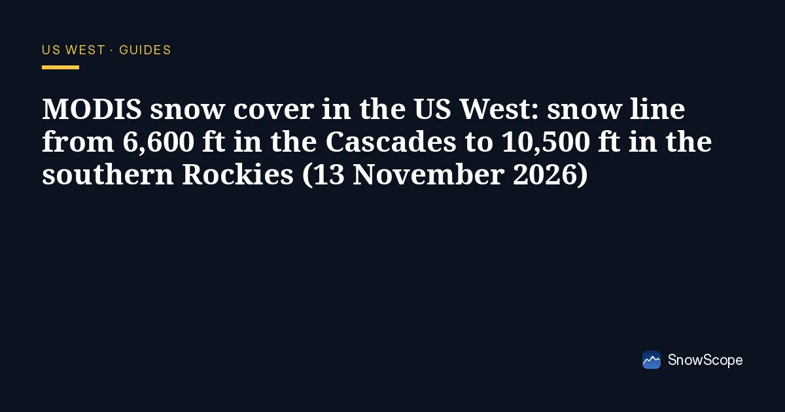
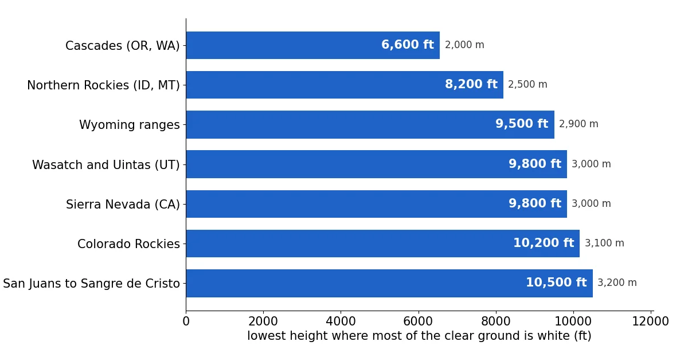
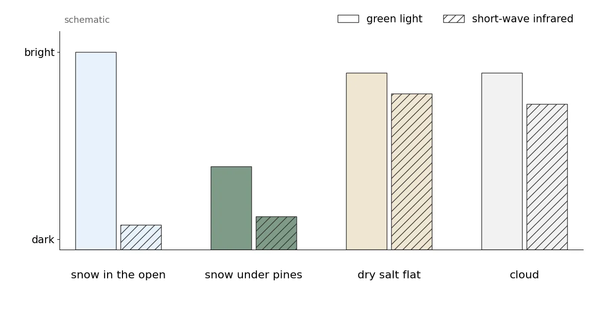

MODIS snow cover in the US West: snow line from 6,600 ft in the Cascades to 10,500 ft in the southern Rockies (13 November 2026)
Early-season snow in the US West stays on the high peaks. From space on 13 November 2026, we found snow on 151,099 km² of ground above 1,500 m—only 11% of the high ground across the entire region. The snow line slopes upward from north to south, starting at 2,000 m in the Cascades and climbing to 3,200 m in the southern Colorado Rockies.
See the live snow forecast for Western US mountains in the SnowScope appSnow depth, powder alerts and the 3D map, free.

What the the snow map showed: a mostly clear ten days
Between 4 and 13 November the view was mostly clear: on most days, cloud covered only 20 to 43% of the high ground. On 11 November, the clearest day, cloud reached just 20%. By 13 November, however, thick cloud had moved in and covered 86% of the region.
Because no single day shows everything, we took the latest clear view of each pixel over the ten days. This composite is fresh: 65% of the high ground was last seen on 12 November. Only 1.9% stayed hidden by cloud on every pass, chiefly in the Cascades and northern Idaho.
Snow lines north to south: how high is the white ground?
The Cascades of Oregon and Washington show the lowest snow line, at 2,000 m (6,600 ft). Above that height, 38% of the clear ground was white—a good sign for a region that starts the season early. The northern Rockies of Idaho and Montana place their snow line at 2,500 m (8,200 ft), with 31% of their high ground white.
South of there, snow grips only the summits. Wyoming's ranges sit at 2,900 m (9,500 ft), Utah's Wasatch and Uintas at 3,000 m (9,800 ft) with 11% white, and the Sierra Nevada of California also at 3,000 m but with 15% white. Colorado's Rockies start at 3,100 m (10,200 ft) with 22% white. The southern ranges—the San Juans, Sangre de Cristo and mountains of New Mexico—do not reach 50% snow cover until 3,200 m (10,500 ft).
Above 3,750 m (12,300 ft), nearly all clear ground was white everywhere. Below 2,250 m (7,400 ft), only 6% of clear ground held snow.

Why satellites see snow: the NDSI and its limits
MODIS detects snow by comparing two colors of light. Snow is bright in green light but absorbs short-wave infrared near 1.6 µm. Rock, soil and plants look different in these two bands. The Normalized Difference Snow Index (NDSI) turns this into a single number: high values flag snow, low values do not. The algorithm rejects pixels that look ambiguous, removes snow from warm ground, and masks out clouds separately.
The West presents traps. Under a dense forest canopy, the snow map sees green crowns and misses the snow below. Bright salt flats like the Bonneville Salt Flats can mimic snow when the ground is cold. And thin, icy clouds can fool the index. These limits matter most for patchy, early-season snow.

Ground truth: what SNOTEL stations say
The NRCS operates automatic snow stations across the western mountains. We checked 3,766 station readings from 4 to 12 November against the MODIS view on the same days. The two agreed 77.5% of the time. MODIS missed thin or patchy snow at 370 stations and false-alarmed at 477 others.
In Colorado, 49 of 63 stations above the line had snow. In the northern Rockies, 36 of 44 did. In Wyoming, 15 of 17. Below the lines, most stations were bare: only 7 of 52 in Utah and 11 of 106 in the Cascades had snow.
The Sierra Nevada stood apart. This told us the Sierra had thin snow from about 7,500 ft that MODIS had not counted as white. Local news agreed: Breckenridge in Colorado delayed opening on 6 November because its base was too thin, while Copper Mountain received 4 inches overnight.
Pixel by pixel: how much snow at each height
Breaking down the region into 250 m height bands shows where snow begins to dominate. Between 1,500 and 2,250 m, only 6% of clear ground was white. Snow coverage climbed steadily through the mid-elevations: 11% between 2,250 and 2,500 m, 21% between 2,500 and 2,750 m, and 36% between 2,750 and 3,000 m.
Above 3,000 m the picture shifts abruptly. Between 3,000 and 3,250 m, 63% of clear ground was white. At 3,250 to 3,500 m, that rose to 83%. Between 3,500 and 3,750 m, 92% was white. This steep rise reflects the transition from seasonal snow that may melt to permanent or near-permanent high-altitude snow.
How SnowScope and MODIS align
We compared the MODIS map with SnowScope for 12 November across 1,021,095 km² of ground the snow map saw clearly. The two agreed on 95.5% of the area. MODIS counted 68,147 km² of snow; SnowScope showed 52,780 km². The difference lies mostly in thin snow at the margins of the snowpack and under forest, which the two tools handle differently. This close match tells us both are reading the landscape consistently.
Tips for skiers
- Early-season routes in Utah and Colorado should aim for terrain above 3,000 m (9,800 ft) and 3,100 m (10,200 ft) respectively. Expect thin cover and rocky patches at these heights.
- Trust the higher elevations but check for rocks.
- If open terrain nearby is white, assume the woods have cover too.
- The Cascades and northern Rockies have higher snow cover percentages; routes here have a better chance of continuous snow than ranges to the south.
About these numbers
Resort snow depths are the deepest snow on the resort's upper slopes on the date shown; they are estimates for an area, not a measurement at one point. Forecasts can change. Always read the official avalanche bulletin before going off-piste.
Cite this report
For research, teaching or the press: the numbers and charts are free to reuse under CC BY 4.0 with this citation.
SnowScope (2026), MODIS snow cover in the US West: snow line from 6,600 ft in the Cascades to 10,500 ft in the southern Rockies (13 November 2026), https://snowscope.app/blog/en/2026/11/modis-snow-cover-us-west-13-november-2026.html, accessed 2026-11-13
SnowScope (Atlas Labs). (2026, November 13). MODIS snow cover in the US West: snow line from 6,600 ft in the Cascades to 10,500 ft in the southern Rockies (13 November 2026). SnowScope snow reports. https://snowscope.app/blog/en/2026/11/modis-snow-cover-us-west-13-november-2026.html
BibTeX
@misc{snowscope2026modissnowcoveruswest13no,
author = {{SnowScope (Atlas Labs)}},
title = {MODIS snow cover in the US West: snow line from 6,600 ft in the Cascades to 10,500 ft in the southern Rockies (13 November 2026)},
year = {2026},
month = nov,
howpublished = {\url{https://snowscope.app/blog/en/2026/11/modis-snow-cover-us-west-13-november-2026.html}},
note = {Published 2026-11-14 13:29 UTC; accessed 2026-11-13}
}· CC BY 4.0 · Methods, data and tools →
Follow Western US mountains
Free: a message when fresh snow is coming, and the forecast every morning.
More snow reports

Purgatory's summit holds 3 in (7 cm) on 12 November 2026. Snow totals over the next week: 7 in (17 cm) at the top, 6 in (15 cm) mid-mountain, 4 in (10 cm) at base.

Steamboat, Colorado, for families: what works for toddlers, school-age kids, teens and parents, with the snow of 46 past winters at three heights.

How to spend a first day at Park City Mountain, Utah, and when to go: our snow history gives about 71 in (180 cm) at the usual mid-mountain peak over 46 past winters.